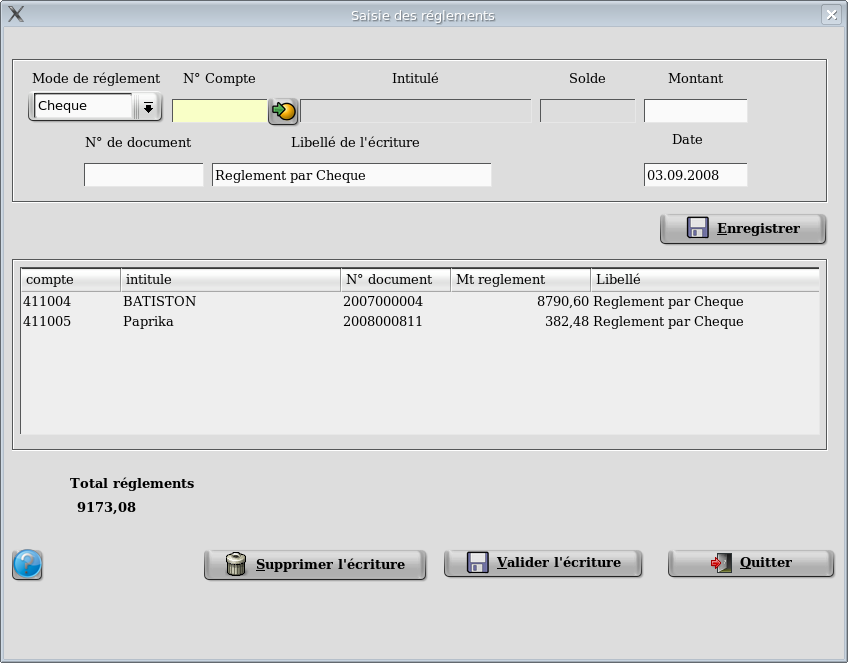
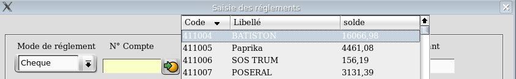
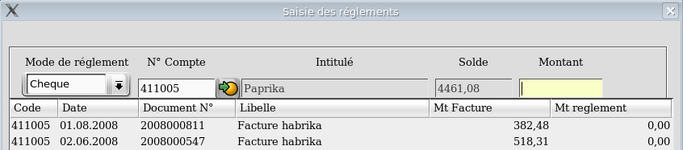
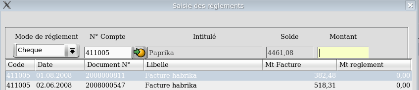
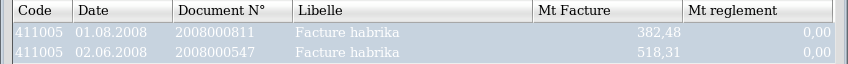
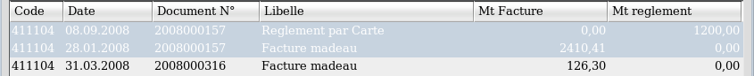
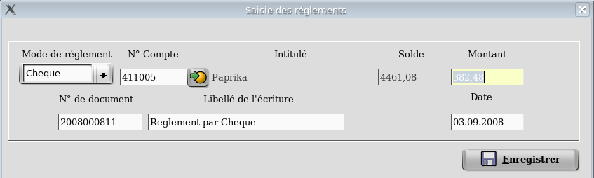
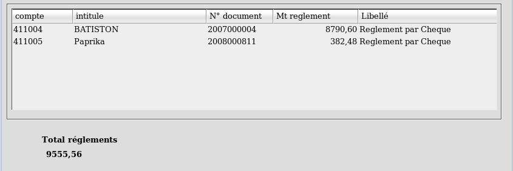

Saisies des réglements.
Préambule :
Avant toute saisie veuillez vérifiez les pré-requis suivants.
1- Dans la table des comptes créez un compte banque et un compte caisse ( Ex: 512000 & 530000 ).
2- Dans la table des journaux créez un journal de banque et un journal
de caisse ( Ex: 50 & 53 ) ayant pour type 'TR' en veillant à
bien fournir le compte corespondant ( Ex: 530000 pour un journal de
caisse ).
3- Dans la table des paramètres completez les zones N° journal de caisse et N° journal de banque.
4- Enfin, si vous souhaitez que la saisie des réglements soit activé
par défaut lors de l'impression des factures allez dans les préférences
et cochez le bouton had hoc.
But de la gestion des réglements:
Ces fonctionnalités ne s'adressent qu'a ceux qui n'ont pas activé la
compta et va leur permettre de gérer d'une manière simple les impayés
afin de connaitre à tout moment le détail des factures dues ainsi que
le montant total des impayés pour chaque client.
Processus complet.
1- Gestion des réglements. Deux possibilités:
A l'impression de la facture
( et seulement à l'impression de la facture ), on peut saisir le
réglement ce qui va générer une écriture. Si le réglement correspont au
montant de la facture alors les deux écritures ( facture et réglement )
seront lettrées, la facture n'apparaitra plus dans les impayés. Si le
réglement ne correspond pas au montant de la facture ( cas d'un
réglement partiel ) alors les deux écritures ne seront pas lettrées et
apparaitront en impayés.
Par l'intermédiaire du programme de saisie des réglements.
On pourra saisir les réglements pour chaque type de
réglements. (Une saisie pour tous les chéques, une pour toutes les
cartes et une autre pour toutes les especes) On pourra par la suite visualiser et supprimer un réglement.
On pourra visualiser les impayés.
On pourra imprimer les impayés pour une fourchette de dates et de comptes.
2- Gestion des relances.
On pourra saisir trois niveaux de textes de relances.
On pourra préparer les relances. C'est à dire
sélectionner les clients pour lesquels on va imprimer une relance et
les lignes de factures qui devront apparaitre dans les relances. On
pourra aussi modifier le niveau de relance.
Enfin, on pourra imprimer les relances pour la
totalité de la sélection ou bien pour une sélection partielle.
3- Gestion des relevés de factures.
On pourra aussi imprimer un relevés des factures
dues pour l'ensemble des clients ou pour un sélection partielle.
Important
: La saisie d'un acompte dans un bl ne génère pas d'écriture. Vous
devrez le saisir manuellement par le programme de saisie des réglements.
Les modes de règlement virement et traite ne générent pas d'écriture.
La gestion des règlements ne gère que le cas des règlements uniques.

L'écran
de saisie se
découpe en deux parties. La partie haute est la zone de
saisie et la
partie basse est la zone ou sont stockées les lignes saisies
mais non
encore validées.
On
peut proceder de deux façons pour saisir les réglements.
- Soit
une saisie par réglement, c'est à dire que chaque ligne saisie sera
validée.
- Soit une saisie pour l'ensemble des
réglements.
Chaque type de réglement devant faire l'objet d'une saisie différente.
Une saisie pour les especes, une pour les cartes etc...

Saisissez
le mode de réglements. Sont proposés les modes " Chèques, cartes,
Especes, Virements". Vous pouvez saisir manuellement autre chose si les
choix proposés ne correpondent pas. Puis d'un clic sur le symbole  à droite de la zone
" N° compte "
vous pouvez sélectionner le compte client.
à droite de la zone
" N° compte "
vous pouvez sélectionner le compte client.

A la sélection du client une fenêtre s'ouvre qui va montrer l'ensemble des écritures non lettrées.
Plusieurs possibilités sont possible.
1- Le réglement correspont à la facture.
2- Le réglement correspond à un réglement partiel
d'une facture. (cas des factures payées en plusieurs fois)
3- Le réglement correspond à un réglement de plusieurs factures.
4- Le réglement correspond à un acompte. (La facture n'a pas encore été émise)
5- Le réglement correspond au solde d'une facture.
(cas des factures payées en plusieurs fois)

Si le réglement correspond à la facture on sélectionne la ligne.

Si le réglement correspond à plusieurs factures on sélectionne les lignes de factures réglées.

Si
le réglement correspond à un solde, on sélectionne la ligne de facture
et la ou les lignes des réglements déjà éffectués puis on modifiera le
montant qui s'affichera automatiquement (voir la zone activée
ci-dessous).

Les zones se remplissent automatiquement et il suffit de cliquer sur le bouton." Valider la selection " .

La ligne de réglement apparait alors dans la partie basse de l'écran et la zone " Total réglements " est mis à jours.
On poursuit alors de cette façon pour l'ensemble des réglements identiques.
Cas particuliers : Lors d'une saisie d'un réglement le montant perçu ne correspond pas forcément a celui d'une facture. Deux
cas différents peuvent se
présenter. Soit que le réglement solde partiellement une
ou plusieurs lignes de facture, soit qu'il s'agit d'un acompte.
Si le réglement correspond à un réglement partiel, alors on va
selectionner la ou les factures concernées par ce réglement (voir plus
haut) puis on va modifier le montant du réglement qui se positionne
automatiquement lors d'une sélection de ligne.
Si le réglement correspond à un acompte, on saisit son client puis on
ferme la fenêtre des écritures (qui s'ouvre si le client a des
écritures) et on saisit manuellement le montant du réglement.
N'oubliez pas d'enregistrer votre
modification et de
valider votre écriture
----------------------------------------------------------------------------------------------------------------------
retour en haut
de la page
Retour a
l'index